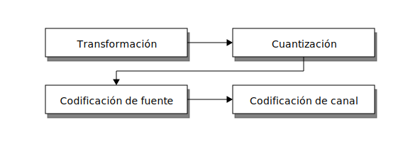
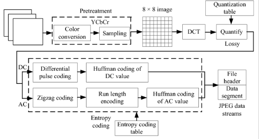
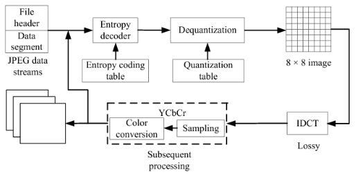
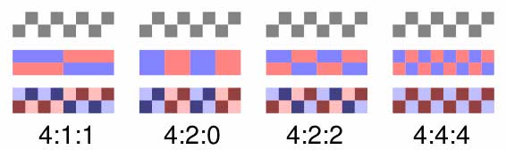
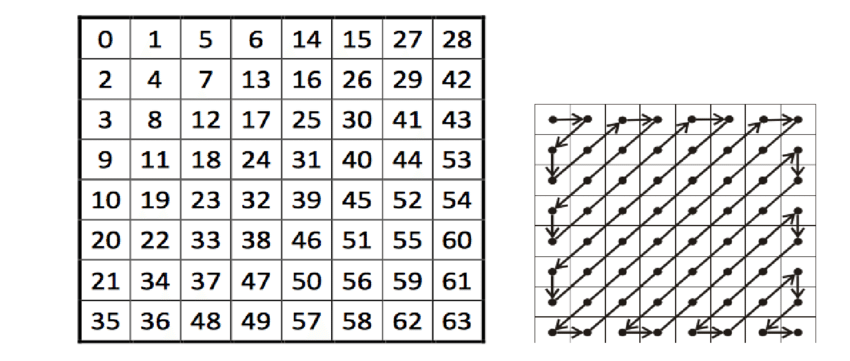
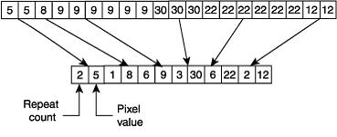

%matplotlib inline
import numpy as np
import matplotlib.pyplot as plt
from matplotlib import rcParams
rcParams['figure.dpi'] = 120
import cv2
1. Transmisión y Compresión¶
En esta lección:
Esquema transmisor de Shannon
Algoritmo JPEG (primeros pasos)
1.1. Ancho de banda de un video¶
¿Cúanto pesa una imagen en resolución 4K?
(asumiendo 255 niveles para los píxeles)
Nota
Un video es una secuencia de imágenes corriendo a una cierta tasa medida en cuadros por segundo (fps). Un estándar típico es 24 fps, lo cual es suficiente para dar la ilusión de movimiento fluido.
¿Cuánto ancho de banda se necesita para ver un video a 24 fps en tiempo real (sin audio)?
Si comparamos este valor con la velocidad de descarga de los planes de internet, resulta ser claramente infactible
Advertencia
¿Cómo pueden entonces funcionar los servicios de streaming?
Responderemos esta pregunta estudiando en detalle el bloque transmisor del modelo teórico de Shannon
1.2. Modelo de Shannon revisitado¶
Recordemos el modelo de Shannon

El transmisor puede subdividirse en cuatro etapas
{kind=link}
donde
Transformación: Cambia la representación de los datos de forma tal de disminuir su redudancia y correlación
Cuantización: Reduce la cantidad de bits que se usan para representar la señal. Este paso provoca pérdidas en la señal, por lo que sólo se ocupa cuando no es necesario recuperar la señal de forma perfecta luego de transmitir
Codificación de fuente: Reescribe la señal usando un código de largo variable
Codificación de canal: Robustece el código para que pueda transmitirse por un canal posiblemente ruidoso con menos errores
En esta lección veremos en detalle los pasos de transformación y cuantización para el algoritmo JPEG
Las próximas lecciones tratan sobre los pasos de codificación los cuales se basan en teoría de la información
1.3. Compresión y codificación¶
Comprimir es:
Nota
Codificar la información usando “menos bits” que la representación original
La compresión puede ser de tipo
Lossless (sin pérdidas): Los datos originales pueden reconstruirse perfectamente
Lossy (con pérdidas): Se reconstruye una versión aproximada de los datos originales
Si usamos cuantización entonces estamos asumiendo pérdidas
1.4. Ejemplo: Algoritmo Joint Photographic Experts Group (JPEG)¶
Es un algoritmo de compresión con pérdidas (lossy) para imágenes digitales que es ampliamente utilizado
Considera los siguientes pasos (los pasos en negrita tienen pérdidas)
Preprocesamiento:
Conversión a estándar YCbCr
Submuestreo de canales de color
Partición de la imagen en bloques de 8x8 píxeles. Luego por cada bloque:
Transformada discreta coseno (DCT)
Cuantización escalar con matriz Q
Reordenamiento zig-zag
Codificación Run-length
Codificación de Huffman
El archivo JPEG contiene los bloques de 8x8 codificados (cuerpo) y el diccionario de codificación (header)
El siguiente diagrama muestra el bloque transmisor JPEG:
{kind=link}
Para descomprimir una imagen JPEG se realizan los pasos anteriores en reversa. El siguiente diagrama muestra el bloque receptor JPEG:
{kind=link}
A continuación estudiaremos cada uno de estos pasos
1.4.1. Preprocesamiento¶
Primero se convierte la imagen a estándar YCbCr
Luego (opcionalmente) se reduce la resolución de los canales chroma (Cb y Cr) con respecto al canal de luminancia (Y)
Algunas estándares de submuestreo de color son
{kind=link}
Donde por ejemplo 4:2:2 significa que los canales chroma tienen la mitad de la resolución de la luminancia
El submuestreo aprovecha que el sistema visual humano es más sencible a la iluminación que al color.
En la práctica es muy difícil notar la disminución en calidad de imagen 4:2:2 JPEG con respecto a una donde no se hizo submuestreo de color
Ejemplo
Podemos usar la función cvtColor de OpenCV para obtener la imagen en estándar YCbCr
Luego submuestreamos cada canal a gusto y recomponemos la señal
im = cv2.imread("../images/valdivia-hd.png")
# Nota: Por defecto opencv importa como BGR en vez de RGB
im = cv2.cvtColor(im, cv2.COLOR_BGR2RGB)
# Transformar a YCrCb y extraer los canales
Y, Cb, Cr = cv2.cvtColor(im, cv2.COLOR_RGB2YCrCb).T
Cb_submuestreo = np.repeat(Cb[::2, :], 2, axis=0)
Cr_submuestreo = np.repeat(Cr[::2, :], 2, axis=0)
# Juntar y convertir en RGB
im_ycrcb = np.stack((Y, Cb_submuestreo, Cr_submuestreo)).T
im2 = cv2.cvtColor(im_ycrcb.astype('uint8'), cv2.COLOR_YCrCb2RGB)
# Visualizar resultado
fig, ax = plt.subplots(2, figsize=(6, 6), tight_layout=True)
ax[0].imshow(im)
ax[0].axis('off')
ax[0].set_title('Imagen original')
ax[1].imshow(im2)
ax[1].axis('off')
ax[1].set_title('Imagen submuestreada');

1.4.2. Separación en bloques y tranformación con DCT¶
El algoritmo JPEG se aplica secuencialmente en bloques disjuntos de 8x8 píxeles
Cada bloque se lleva al dominio de la frecuencia usando la transformada discreta coseno
Discrete Cosine Transform (DCT)
Sea una señal discreta y bidimensional \(g[n_1, n_2]\) con índices \(n_1 \in [0, N_1-1]\) y \(n_2 \in [0, N_2-1]\) su DCT es
y su inversa
donde
La DCT bidimensional:
se puede descomponer en 2 aplicaciones de la DCT 1D
es lineal, y cumple el principio de conservación de energía. Podemos llevar una imagen al espacio de frecuencias sin pérdida de información
es equivalente a la DFT de una señal “simetricamente extendida”
Es decir que podemos usar el algoritmo FFT para calcular eficientemente la DCT
Ojo: La convolución en espacio original no es multiplicación en el espacio DCT
Ejemplo: Imagen simetricamente extendida
Así se ve una imagen simetricamente extendida
Debido a esto la DCT no tiene artefactos de borde como la FFT
im_bw = cv2.cvtColor(im, cv2.COLOR_BGR2YCrCb)[:, :, 0]
im_bw_sym = np.hstack((im_bw, np.fliplr(im_bw)))
im_bw_sym = np.vstack((np.flipud(im_bw_sym), im_bw_sym))
fig, ax = plt.subplots(figsize=(8, 5), tight_layout=True)
ax.axis('off')
ax.imshow(im_bw_sym, cmap=plt.cm.Greys_r);

Ejemplo: Transformada DCT
La transformada coseno está implementada en scipy.fftpack
Sin embargo no existe una versión para dos dimensiones como la transformada de Fourier
Tenemos que aplicarla en cadena primero a la dimensión 0 y luego a la 1 (o viceversa)
from scipy import fftpack
DCT2 = lambda g, norm='ortho': fftpack.dct( fftpack.dct(g, axis=0, norm=norm), axis=1, norm=norm)
IDCT2 = lambda G, norm='ortho': fftpack.idct( fftpack.idct(G, axis=0, norm=norm), axis=1, norm=norm)
imsize = im_bw.shape
dct_matrix = np.zeros(shape=imsize)
# Se recorre la imagen en bloques de 8x8
for i in range(0, imsize[0], 8):
for j in range(0, imsize[1], 8):
dct_matrix[i:(i+8),j:(j+8)] = DCT2(im_bw[i:(i+8),j:(j+8)])
¿Cómo se ven estos bloques?
def plot_values(ax, tile, fontsize=14):
mid = (tile.max() + tile.min())/2.
for i in range(8):
for j in range(8):
label = tile[i, j]
color = 'black' if label > mid else 'white'
ax.text(j, i, int(label), fontsize=fontsize,
color=color, ha='center', va='center')
block_idx = 15
bloque_pixels = im_bw[8*block_idx:8*block_idx+8, 8*block_idx:8*block_idx+8]
bloque_dct = dct_matrix[8*block_idx:8*block_idx+8, 8*block_idx:8*block_idx+8]
fig, ax = plt.subplots(1, 2, figsize=(8, 4), tight_layout=True, sharey=True)
ax[0].imshow(bloque_pixels, cmap=plt.cm.Greys_r, vmin=im_bw.min(), vmax=im_bw.max())
ax[0].set_title("%d 8x8 image block" %(block_idx));
plot_values(ax[0], bloque_pixels)
# DCT 8x8
ax[1].imshow(bloque_dct, cmap=plt.cm.Greys_r, vmin=dct_matrix.min(), vmax=dct_matrix.max())
ax[1].set_title("8x8 DCT")
plot_values(ax[1], bloque_dct);

Una imagen tiene mucha correlación entre sus píxeles vecinos
Al llevarla al espacio de frecuencia esta información se concentra en el cero (centro) del espectro
La frecuencia cero del bloque DCT es la esquina superior izquierda
La frecuencia aumenta de izquierda a derecha y de arriba hacia abajo
Notemos que muchos de los coeficientes de alta frecuencia de la DCT tienen valores bajos
Nota
La DCT ha disminuido la redundancia en la información
1.4.3. Cuantización¶
En este paso se busca cuantizar cada matriz DCT de 8x8 y reducir la “cantidad de valores posibles”
Nota
La cuantización es una operación de redondeo o truncamiento
El ejemplo más clásico se conoce como cuantización escalar. Esta operación recibe una señal \(x\) y retorna un nuevo valor definido como
donde el diseñador del cuantizar debe decidir la cantidad y valor de \(r_i\) y también los límites o fronteras \(d_i\)
Un caso particular es la cuantización uniforme donde la diferencia entre los niveles \(q\) es constante
Si \(d_0 = -V\) y \(d_L = V\), una cuantización uniforme de \(L\) niveles sería
y el valor de representación es el punto medio de cada nivel
También podríamos definir \(q\) y usar la fórmula
La calidad de la señal cuantizada se mide usando el error de cuantización o diferencia cuadrática entre el valor real y su versión cuantizada
Ejemplo
Cuantización uniforme de una señal sinusoidal con distintos valores de \(q \)
def quantize_uniform(x, x_min, q):
return x_min + q/2 + np.floor((x-x_min)/q)*q
t = np.arange(100, step=0.1)
s1 = np.sin(2.0*np.pi*t*0.05)
s2 = quantize_uniform(s1, s1.min(), q=0.1)
s3 = quantize_uniform(s1, s1.min(), q=0.2)
fig, ax = plt.subplots(3, figsize=(6, 4), tight_layout=True, sharex=True)
ax[0].plot(t, s1)
ax[0].set_title('Señal original')
ax[1].plot(t, s2)
ax[1].set_title('Cuantización uniforme q=0.1')
ax[2].plot(t, s3);
ax[2].set_title('Cuantización uniforme q=0.2');

Cuantización en JPEG
Recordemos que JPEG cuantiza en el espacio de frecuencia
Cada bloque de 8x8 de componentes DCT se cuantiza por separado
El nivel de cada uno de los componentes se redondea según una matriz de cuantización Q
Q fue diseñada tal que componentes de alta frecuencia se cuantizan en menos niveles
Existen muchas implementaciones de la matriz Q según fabricante y equipo: https://www.impulseadventure.com/photo/jpeg-quantization.html
Q = np.array([[16, 11, 10, 16, 24, 40, 51, 61],
[12, 12, 14, 19, 26, 58, 60, 55],
[14, 13, 16, 24, 40, 57, 69, 56],
[14, 17, 22, 29, 51, 87, 80, 62],
[18, 22, 37, 56, 68, 109, 103, 77],
[24, 35, 55, 64, 81, 104, 113, 92],
[49, 64, 78, 87, 103, 121, 120, 101],
[72, 92, 95, 98, 112, 100, 103, 99]])
El bloque cuantizado se obtiene como \(\text{ROUND}\left(\frac{G_C}{Q}\right)\)
block_idx = 15
bloque_pixels = im_bw[8*block_idx:8*block_idx+8, 8*block_idx:8*block_idx+8]
bloque_dct = dct_matrix[8*block_idx:8*block_idx+8, 8*block_idx:8*block_idx+8]
bloque_cuantizado = np.round(bloque_dct/Q)
fig, ax = plt.subplots(1, 3, figsize=(10, 4), tight_layout=True, sharey=True)
ax[0].imshow(bloque_pixels, cmap=plt.cm.Greys_r, vmin=im_bw.min(), vmax=im_bw.max())
ax[0].set_title("%d 8x8 image block" %(block_idx));
plot_values(ax[0], bloque_pixels)
# DCT 8x8
ax[1].imshow(bloque_dct, cmap=plt.cm.Greys_r, vmin=dct_matrix.min(), vmax=dct_matrix.max())
ax[1].set_title("8x8 DCT")
plot_values(ax[1], bloque_dct)
ax[2].imshow(bloque_cuantizado, cmap=plt.cm.Greys_r)
plot_values(ax[2], bloque_cuantizado)
ax[2].set_title("8x8 Cuantizado\n%d nonzero" %(np.count_nonzero(bloque_cuantizado)));

Ejemplo
El nivel de cuantización de JPEG se controla como un valor denominado tipicamente como calidad que va entre 0 y 100
A mayor calidad se aplica menor cuantización, resultando en un archivo más pesado
def cuantizar(percent):
im_dct = np.zeros(imsize)
nnz = np.zeros(dct_matrix.shape)
if (percent < 50):
S = 5000/percent
else:
S = 200 - 2*percent
Q_dyn = np.floor((S*Q + 50) / 100);
Q_dyn[Q_dyn == 0] = 1
for i in range(0, imsize[0], 8):
for j in range(0, imsize[1], 8):
quant = np.round(dct_matrix[i:(i+8),j:(j+8)]/Q_dyn)
im_dct[i:(i+8),j:(j+8)] = IDCT2(quant)
nnz[i, j] = np.count_nonzero(quant)
return im_dct, np.sum(nnz)
fig, ax = plt.subplots(3, figsize=(5, 8), tight_layout=True)
ax[0].imshow(im_bw, cmap=plt.cm.Greys_r);
ax[0].set_title(f"Imagen original {np.prod(im_bw.shape)*8/1e+6:0.3f} MB")
ax[0].axis('off')
imc, nnz = cuantizar(50)
ax[1].imshow(imc, cmap=plt.cm.Greys_r);
ax[1].set_title(f"50% de calidad {nnz*8/1e+6:0.3f} MB")
ax[1].axis('off')
imc, nnz = cuantizar(10)
ax[2].imshow(imc, cmap=plt.cm.Greys_r);
ax[2].set_title(f"10% de calidad {nnz*8/1e+6:0.3f} MB")
ax[2].axis('off');

1.4.4. Reordenamiento zig-zag¶
Luego de cuantizar el bloque de 8x8 este se reordena como una tira de largo 64 aplicando un reordenamiento de tipo zig-zag
{kind=link}
El reordenamiento en zig zag crea un vector donde los componentes están ordenados por frecuencia y los ceros (de las frecuencias altas) quedan más cerca
Nota
Puedes revisar el algoritmo para generar el arreglo zig-zag en distintos lenguajes aquí: https://rosettacode.org/wiki/Zig-zag_matrix
El reordenamiento zig-zag hace más eficiente el siguiente paso: Run Length Encoding (RLE)
1.4.5. Run Length encoding¶
El run-length es una codificación sencilla y sin pérdida, que es muy eficiente cuando tenemos valores que se repiten
Los datos codificados son tuplas (nrep, valor) concatenadas, donde nrep es la cantidad de veces que se repitió valor, como muestra la siguiente figura
{kind=link}
El próximo paso del algoritmo JPEG es la codificación de Huffmann la cual veremos en la próxima lección